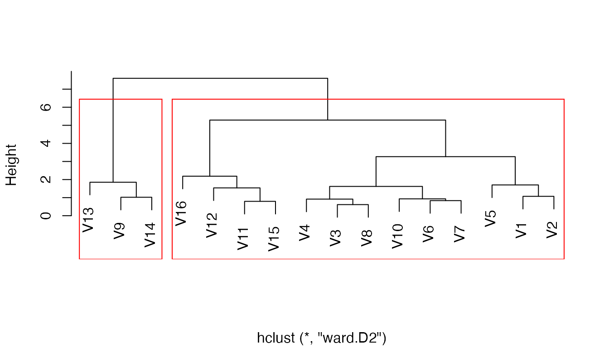

aweSOM package description
aweSOM-package.RmdaweSOM is an R package offering a set of tools to explore and analyze datasets with Self-Organizing Maps (also known as Kohonen maps), a form of artificial neural network originally created by Teuvo Kohonen in the 1980s. The package introduces interactive plots, making analysis of the SOM easier.
aweSOM provides a variety of functions to analyze and visualize SOMs. They can be used either through the web-based interface (called by aweSOM()) or through command-line functions. The package relies on the kohonen package for the training of SOMs.
This vignette details some of the most important functions of the aweSOM package, along with the workflow of training a SOM, assessing its quality measures and visualizing the SOM as well superclusters within it.
Creating a dataset and training a Self-Organizig Map
For the purpose of this example, the iris dataset is used to train a 4x4 hexagonal SOM.
After selecting and pre-processing the training data (here by scaling each variable), the somInit function is used to initialize the map’s prototypes. By default, this is done by initializing the grid on the first two principal components (PCA), but other schemes are available.
The training data, initial prototypes and other parameters are then passed to the kohonen::som function for training.
ok.data <- iris
## Select variables
dat <- ok.data[,c("Sepal.Length", "Sepal.Width", "Petal.Length", "Petal.Width" )]
### Scale training data
dat <- scale(dat)
### Initialization (PCA grid)
init <- somInit(dat, 4, 4)
## Train SOM
ok.som <- kohonen::som(dat, grid = kohonen::somgrid(4, 4, 'hexagonal'), rlen = 100, alpha = c(0.05, 0.01),
radius = c(6.08,-6.08), init = init, dist.fcts = 'sumofsquares')Assessing the Quality of the Map
The somQuality function can be used to assess the quality of a SOM object created by kohonen::som, according to several measures.
somQuality(ok.som, dat)
#>
#> ## Quality measures:
#> * Quantization error : 0.2136537
#> * (% explained variance) : 94.62
#> * Topographic error : 0.02
#> * Kaski-Lagus error : 1.441806
#>
#> ## Number of obs. per map cell:
#> 1 2 3 4 5 6 7 8 9 10 11 12 13 14 15 16
#> 10 4 7 5 5 14 11 5 16 7 11 6 12 21 13 3Percentage of explained variance: Similar to other clustering methods, the share of total variance that is explained by the clustering.
Quantization error: Average distance between the data points and the map’s prototypes to which they are mapped.
Topographic error: Share of observations for which the best-matching node is not a neighbor of the second-best matching node on the map. 0 indicates excellent topographic representation (all best and second-best matching nodes are neighbours), 1 is the maximum error (best and second-best nodes are never neighbours).
Kaski-Lagus error: Combines the quantization error and the topographic error
Visualizing SOM with aweSOM
aweSOM provides multiple types of interactive and static visualizations for SOM.
They can be called using the aweSOM shiny widget (launched using aweSOM()), or directly from the command line.
aweSOMplot
aweSOMplot creates a variety of different interactive SOM visualizations. Using the graphType argument to the function, one the following types of plots can be created:
- Hitmap or population map: visualizes the number of observation per cell using respectively sized hexagons/rectangles.
aweSOMplot(ok.som = ok.som, ok.data = ok.data, graphType = 'Hitmap',
plotSize = 400)The radar plot displays the mean value for each of the variables, per cell
aweSOMplot(ok.som = ok.som, ok.data = ok.data, graphType = 'Radar',
plotVarMult = c("Sepal.Length", "Sepal.Width",
"Petal.Length", "Petal.Width"),
plotSize = 400)This can also be represented with barplots when the number of variables is limited.
aweSOMplot(ok.som = ok.som, ok.data = ok.data, graphType = 'Barplot',
plotVarMult = c("Sepal.Length", "Sepal.Width",
"Petal.Length", "Petal.Width"),
plotSize = 400)Other information can also be plotted:
- Boxplot displays the quartile distribution of values for each cell.
- Star WHAT DOES IT DO EXACTLY?
- Heat WHAT DOES IT DO EXACTLY?
Categorical variables, or variables that were not taken into account in the creation of the map, can also be plotted.
aweSOMplot(ok.som = ok.som, ok.data = ok.data, graphType = 'Camembert',
plotVarOne = 'Species', plotSize = 400)In this case, we plot the Species, which returns the percentage of species grouped in each cell. One can see that the algorithm did cluster the species together with quasi-perfection
Further options are available to explore the dataset, and several arguments can be specified
- plotNames:
- constrast
- average_format
- plotVarMult:
- plotOutliers:
- plotEqualSize:
- plotSize:
- palsc:
- palplot:
- plotRevPal:
Additionally, omitRows can be used an argument to omit certain rows from the visualization.
Superclasses of SOM
SOM maps can be further clustered into superclasses, groups of cells with similar profiles. To do so, classic clustering algorithms are used.
PAM clustering on the SOM cells can be achieved using the following code, or through the shiny app.
superclust_pam <- cluster::pam(ok.som$codes[[1]], 3)
superclasses_pam <- unname(superclust_pam$clustering)Hierarchical clustering on the SOM cells can be achieved using the following code, or through the shiny app.
superclust_hclust <- hclust(dist(ok.som$codes[[1]]), 'ward.D2')
superclasses_hclust <- unname(superclust_hclust$clustering)Quality of superclass clustering
aweSOM provides inbuilt functions to create three different plots that allow assessing the quality of both types of clustering: aweSOMdendrogram, aweSOMscreeplot, and aweSOMsilhouette.
aweSOMdendrogram
aweSOMdendrogram returns a dendogram for hierarchical clustering performed on an SOM object. For the example below, the hierarchical clustering performed in the previous section is used and 2 superclasses are visualized. This function is only valid for hierarchical clustering.
aweSOMdendrogram(ok.som = ok.som, ok.hclust = superclust_hclust,
input_kohSuperclass = 2)
aweSOMscreeplot
aweSOMscreeplot [tbd] JULIEN TU PEUX EXPLIQUER?
aweSOMscreeplot(ok.som = ok.som, method = 'hierarchical',
hmethod = 'ward.D2', nclass = 2)
aweSOMsilhouette
aweSOMsilhouette returns a silhouette for PAM clustering performed on an SOM object. For the example below, the PAM clustering is the same as the one performed in the previous section. This function is only valid for PAM clustering.
aweSOMsilhouette(ok.som, superclasses_pam)